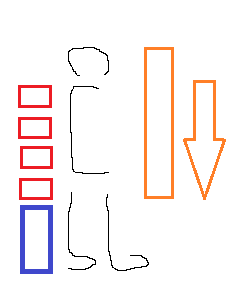

eaten
used to eat
stable
python -c 'c=1;c++' #✗
python -c 's="abc";all_letters=s.split("")' #✗
python -c 'a=(1,2,3);s=", ".join(a)' #✗
0121 <reality>
no way out
z,m,r,22,1,01,2tt0202
<reality at large>
0202100z,r,mmmm"90"
<reality at small>
zzzzzzr"dead"
<coms summary>
I hate browser-out, daemon:80 out-out, golang, ruby, rust, double-redundant-lang12, weirdlang12, weirdlang1212, weirdlang121212, weirdlang12121212
What ayz ungood: Bottle, Tornado, Salt, Mojolicious, Moose, Boost
Best roles on machineware: multimedia user, multimedia user (audio only), web launcher user, non-audio media user researcher
Best iiii owned items: † two-wheeled roadster, † writing gear, † "machine" "gear"/gear, † dice/"dice"
perl -E 'say "laiya/I will do as much as my abilities shalt yield";'